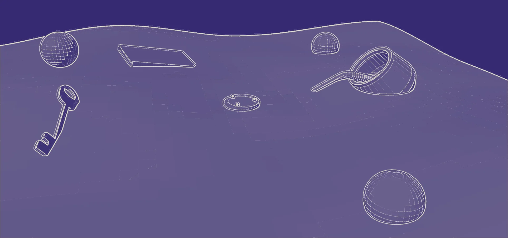
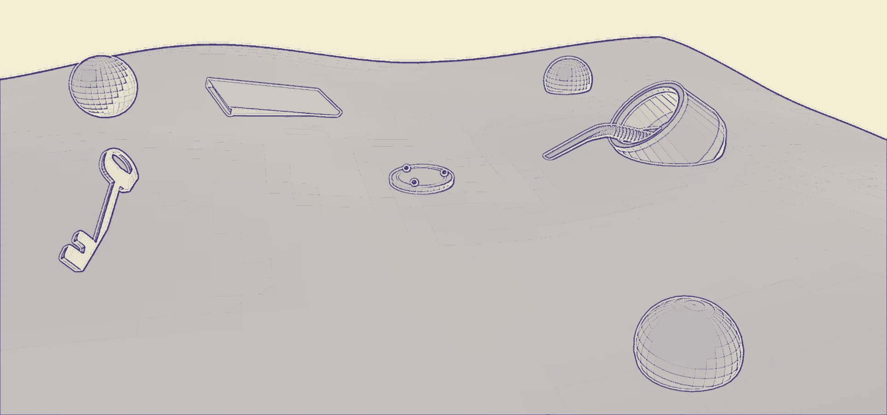

Mundo de la llave · una mudanza
Llegó el día
Seguí bajando para recorrer el camino, de puerta en puerta →
Estás en
Experiencia interactiva
¿Estás dispuesto a buscar en lo que te resulta habitual?
Recomendado: auriculares · Se recorre con scroll
La idea
Los objetos cotidianos pueden adquirir un significado que trasciende su utilidad.
Algunos cobran un valor muy distinto, y hasta pueden volverse una extensión de nosotros. Lo que hace falta es una relectura: una segunda mirada de eso que dabas por sentado.
Antes de empezar · El espacio físico
El lugar está a oscuras, con ruido blanco. Tres computadoras encendidas con luz blanca y el proyector prendido. Cada participante tiene su estación con la experiencia en Unreal; un tótem y un camino de luces conectan lo que pasa en pantalla con el aula.
Tocá los puntos para conocer cada parte
El circuito
Abre la experiencia con el video de bienvenida: motion de texto y voz en off, con escenas cotidianas donde ciertos objetos se resaltan con color.
Vuelve a encenderse antes de la Etapa 5 y al final, con el video de cierre.
En la Etapa 3 cada participante sale un momento de Unreal y deposita acá el objeto que eligió. En la Etapa 4, al volver, solo encuentra humo.
Al final, el tótem guarda esferas físicas (rosa, amarilla y celeste) con los objetos adentro.
Un camino de luces en el piso une las estaciones con el tótem. Se enciende cada vez que hay que salir de Unreal: es el mismo pulso de luz que recorre el pasillo de la Etapa 3.
Tres computadoras con luz blanca. En cada una, un participante recorre las seis etapas en Unreal: del desierto de la plasticidad sináptica a la búsqueda del significado.
En una mesa cercana al tótem. Cuando se deposita el objeto, proyecta un ícono que anticipa la próxima zona del cerebro a transitar: el ícono que permite abrir la puerta de la Etapa 3.
Ubicación exacta e ícono por confirmar.
En la Etapa 5 aparecen apoyados al final del pasillo. Con ellos puestos, en la Etapa 6 los objetos se ven en wireframe y hay que encontrar las esferas que brillan.
Antes de empezar
Todo empieza en el aula, frente al proyector, antes de sentarse en las estaciones.
Los participantes entran al aula y miran el video de bienvenida en el proyector. Todavía no usan ningún dispositivo: miran, escuchan y después cada uno va a su estación.
El aula a oscuras, con ruido blanco. Tres computadoras encendidas con luz blanca y el proyector prendido.
Los participantes entran al aula a oscuras; se escucha ruido blanco.
El proyector muestra el video de bienvenida: un motion de texto con voz en off.
En el video aparecen escenas cotidianas en las que ciertos objetos se resaltan con color, con los recursos gráficos de la marca.
La voz da la bienvenida y explica la experiencia: “Bienvenido a Memoria Material, una experiencia donde vas a darle una nueva mirada a lo cotidiano.” Voz escrita · el audio del video no está producido.
Al terminar, se indica a cada participante que se acerque a su estación. Allí se inicia la experiencia en Unreal.
El video de bienvenida, cuadro por cuadro, a medida que bajás.
Bienvenido a Memoria Material,
una experiencia donde vas a darle una nueva mirada a lo cotidiano.
¿Nunca tuviste un objeto, un momento, un hábito…
…que con el tiempo pasó de ser cotidiano y rutinario, a resignificarse como algo importante y propio de vos?
Hoy vas a vivir qué pasaba en tu mente en ese momento.
Acercate a la computadora designada
y preparate para vivir esta experiencia.
Guion del video de bienvenida · se proyecta en el aula
Etapa 01
El cerebro reorganiza la conexión entre los objetos que reconoce y el significado que le evocan.
Sentado en su estación, el participante recorre el escenario en Unreal desde la computadora. Se acerca a las esferas para escucharlas y conecta cada una con el objeto que le corresponde.

Un espacio desértico con estructuras rectangulares que simulan los pliegues del cerebro. Tres objetos gigantes (un manojo de llaves, un mate y un cuaderno) encallados en la arena, esferas flotantes que apenas brillan y, en el cielo, formas de la marca que pasan. En el centro, una plataforma con tres esferas incrustadas.
La voz en off presenta la etapa.
Al acercarse a una esfera, se ilumina y emite un sonido y una voz vinculados a un objeto. Amarilla: llaves abriendo una puerta —¿Cómo te fue? ¿Ya comiste? Fucsia: alguien toma mate —Gracias, yo ya estoy. Celeste: una hoja se arranca —Tomá mi número, hablemos.
Al interactuar con una esfera, la pantalla toma levemente su color. Se puede volver a tocarla para quitarlo.
Para hacer la conexión hay que interactuar con el objeto correspondiente: la esfera, el objeto y la conexión se iluminan del mismo color.
Con cada conexión se enciende, del mismo color, una de las tres esferas incrustadas en la plataforma central.
Con las tres conexiones, la plataforma se eleva y revela la Cúpula del Reencuadre.
Se entra a la cúpula por una puerta; al atravesarla empieza la Etapa 2.
Tocá una esfera para escucharla y después el objeto que le corresponde. Si seguís bajando, las conexiones se hacen solas.
Reorganizá las conexiones
Tocá una esfera para escucharla. Después tocá el objeto que le corresponde.
Las tres conexiones están hechas. Seguí bajando: la plataforma se eleva.
0 de 3 conexiones
Conexiones hechas
La plataforma se eleva. Para continuar con la experiencia, atravesá la puerta.
Etapa 02
Cuando cambia el significado de un objeto, es porque cambia el punto de vista desde el que lo mirás.
Dentro de la cúpula, el participante se acerca a cada objeto gigante y entra a su mundo por una abertura. Los recorre en un orden fijo (llave, mate y cuaderno) y en cada uno realiza una acción ligada al uso del objeto.
Los tres objetos de la etapa anterior, otra vez gigantes, dentro de la cúpula. El que hay que recorrer primero aparece en color; los demás, en blanco y negro. Al salir de cada mundo se vuelve a la cúpula: el objeto recorrido pasa a blanco y negro y se colorea el siguiente.
La voz en off presenta la etapa.
Al entrar se escucha “Llegó el día, por fin me voy a mudar.” Se recorre un camino a través de cuatro marcos de puerta.
Entre la primera y la segunda puerta, cajas de mudanza de distintos tamaños.
Entre la segunda y la tercera, “Te voy a extrañar, hijo” y “Te regalo esto, espero que te guste”, entre objetos que se regalan a quien se muda: sartén, toallas, decoración, lámpara, muebles.
Entre la tercera y la cuarta, “¿En dónde quedaron las llaves?”, “Me falta lo más importante”, “Creo que la guardaste en la mesita de luz”. Hay tres cajones: en uno está la llave.
Tras la cuarta puerta, una cerradura gigante con el pasador cerrado y una última abertura detrás. Con la llave se abre: “¡Sí! Acá están.”
Se entra por la base del mate. El piso es un gran charco (se escucha el chapoteo) con sillas flotando y otras caídas. En el centro, la única silla de pie y en color.
Al sentarse, las sillas se acomodan en ronda y empieza el diálogo del último recreo del año. Cada silla que habla se colorea e ilumina.
Cada vez que se escucha el mate tomado, el agua baja, hasta revelar en el centro de la ronda un hueco iluminado que lleva al segundo escenario.
Todo se oscurece y se escuchan pájaros. Se prende la hornalla con una pava vieja, se oye un bostezo y unas persianas: se abren ventanas rectangulares con una luz anaranjada que sube como la salida del sol.
Una mañana en familia: “Buen día hijo, ¿cómo estás?”, se prende la radio, se ceba un mate. Al final, pasos y una puerta que se abre con luz blanca: “Bueno, nos vemos a la noche.” Al pasar, el portazo.
Cuadernos y hojas flotantes. Las hojas se ordenan frente al participante y forman un camino de plataformas hacia el siguiente cuaderno.
Cuaderno de materiales: ruido de obra, la cámara tiembla y se levanta polvo. Un diálogo sobre un escritorio nuevo; las anotaciones se escriben flotando a medida que se habla.
Cuaderno de recetas: el escenario pasa de violeta a crema, se escucha algo que se bate y aparecen postres caseros. La abuela dicta la receta; al caer sobre las hojas se levantan nubes de harina, y al nombrar el horno todo se ve más anaranjado.
El último cuaderno, el más grande y abierto de par en par, tiene la salida dibujada en sus hojas: lleva a la Etapa 3.
Recorré los tres mundos: abrí los cajones y llevá la llave hasta la cerradura (es la única acción necesaria para continuar), sentate en la ronda y seguí las hojas del cuaderno.
Mundo de la llave · una mudanza
Seguí bajando para recorrer el camino, de puerta en puerta →
Cajas de mudanza de todos los tamaños
Voz—Te regalo esto, espero que te guste.
Lo que se regala a quien se muda
Voz—¿En dónde quedaron las llaves?
Voz—Me falta lo más importante.
Voz—Creo que la guardaste en la mesita de luz.
Abrí los cajones de la mesita de luz: en uno está la llave.
La cerradura gigante
Llevá la llave hasta la cerradura para continuar.
Arrastrala con el mouse o con el dedo. También podés tocarla una vez, o usar Enter.
La puerta está abierta. Seguí bajando.
Voz—¡Sí! Acá están.
De vuelta en la cúpula
La llave pasa a blanco y negro. Ahora se colorea el mate: se entra por su base.
Mundo del mate · Escenario 1
Voz 1—Bueno che, al final llegamos. El último recreo del año.
Voz 2—Y el último mate también, ¿lo armo yo?
Voz 3—Uh sí, dale… Espero que este verano no sea como siempre, eh, que nos terminamos viendo de vuelta en marzo en el aula.
Voz 4—Sí, loco, hay que hacer algo.
Voz 2—Dejá, yo no les quiero ver más la cara, después de lo que laburamos este año. risas
Voz 3—Daaa, si después andás diciendo que nos extrañás.
Mundo del mate · Escenario 2
pájaros · un bostezo · se abren las persianas
Voz 1—Buen día hijo, ¿cómo estás?
Voz 3—Buen día.
click · se prende la radio
Voz 2—Pasame un mate que ya me tengo que ir a laburar.
Voz 1—Obvio amor, tomá.
Voz 2—Gracias amor.
Voz 1—Que tengas un lindo día.
Voz 2—Ustedes también, los amo.
pasos · rechina una puerta
Voz 2—Bueno, nos vemos a la noche.
De vuelta en la cúpula
El mate pasa a blanco y negro. Último mundo: el cuaderno.
Mundo del cuaderno · Cuaderno de materiales
martillazos · un taladro · un camión da marcha atrás
Mundo del cuaderno · Cuaderno de recetas
algo se bate en un bowl
Voz 1—Va a quedar genial todo el escritorio nuevo.
Voz 2—Sí, primero hay que cambiar el piso, pintar, y último el escritorio.
Voz 1—Va a tardar pero va a quedar impecable. ¿Te repaso lo que anoté?
Voz 2—Dale.
Voz 1—Bueno, primero hay que elegir el modelo del piso, y calcular los m².
Voz 2—Vamos a necesitar un metro, caladora y sellador. Con eso creo que estamos bien.
Voz 1—Y los zócalos, no te olvides.
Voz 1 · abu—¡Hola querido! ¿Vamos a hacer una torta hoy?
Voz 2—¡Obvio abu, eso no se pregunta!
Voz 1 · abu—Bueno, escuchá: ahí en el cajón está mi cuadernito, pasámelo y te voy diciendo.
Voz 2—A ver… se abre un cajón ¡Acá está!
Voz 1 · abu—Bueno, primero tenés que agarrar 3 huevos, 1 taza de azúcar y 2 tazas de harina.
Voz 2—¿Y no iba una taza de aceite también?
Voz 1 · abu—Tenés razón, casi me olvido. Después la vainilla, un poco de leche y al horno.
Etapa 03
Ahora el objeto es tuyo: lo elegís, lo pensás y te desprendés de él.
En Unreal, el participante recorre un pasillo mientras la voz le pide pensar en un objeto que lleve encima. Al final sale un momento de la experiencia: se levanta de su estación, deposita su objeto real en el tótem del aula y vuelve a Unreal para abrir la puerta.
Un pasillo con una puerta al fondo. Un pulso de luz lo recorre hacia adelante y, alrededor, se adivinan muy difuminados otros pasillos como este.
La voz en off: “Ya viviste cómo un objeto puede convertirse en una extensión de nosotros, ahora vamos a vivirlo con vos.”
La consigna se desarrolla durante el recorrido, para dar tiempo a pensar: elegir, entre lo que lleva encima, un objeto que pueda tener un significado distinto.
Se le indica desprenderse simbólicamente del objeto: sale de Unreal y, guiado por luces LED como el pulso del pasillo, lo deposita en el tótem del aula.
Al depositarlo, un holograma en una mesa cercana proyecta un ícono que refiere a la próxima zona del cerebro.
Vuelve a su estación: la puerta del pasillo, antes cerrada, ahora presenta tres íconos.
Al elegir el correcto, el que mostró el holograma, la puerta se abre hacia la Etapa 4.
Recorré el pasillo con el scroll, seguí la secuencia del tótem y del holograma, y elegí el ícono de la puerta.
Interacción · Etapa 03
Pensá en los objetos que llevás encima.
¿Cuál es aquel que puede tener un significado distinto?
Te vamos a dar tiempo.
¿Lo tenés?
Para seguir recorriendo la experiencia, vas a tener que depositar ese objeto en nuestro tótem.
Interacción · Etapa 03 · Fuera de Unreal
La puerta, antes cerrada
Ahora muestra tres íconos. Elegí el que proyectó el holograma para continuar con la experiencia.
Placeholder Íconos provisorios: falta confirmar cuáles son y cuál es el correcto.
Etapa 04
Los objetos que valoramos son anclas de seguridad: cuando se pierden, la mente no para de buscarlos.
El participante recorre una réplica de la primera etapa, ahora sin sus objetos, y puede volver a entrar en cada mundo. Al final sale otra vez de Unreal y va al tótem del aula, donde dejó su objeto.

La réplica del desierto de la Etapa 1, con los colores invertidos. Donde estaban los objetos solo quedan su silueta y su sombra, que por momentos se glitchean como si el objeto reapareciera.
Un fuerte destello blanco y un pitido intenso y sostenido. Durante el destello, la voz en off.
Todo se transita con aberración cromática y glitches donde antes pasaban las formas del cielo. De fondo, siempre, un leve ruido blanco. El espacio se revela de a poco.
Las esferas vuelven a estar desconectadas y apagadas. Al interactuar, hablan de cuando los objetos se perdieron: “Me quiero matar, dejé las llaves en el auto…”, “…se me pudrió el mate…”, “…arruiné el cuaderno, tenía todos mis apuntes…”
Se puede volver a entrar en cada objeto, pero los mundos cambiaron. Llave: los marcos ahora son puertas cerradas y los cajones no se abren. Mate: una luz cenital ilumina el círculo donde estaban las sillas; solo quedan sus sombras. Cuaderno: caen bollos de papel que forman una pila y las anotaciones se apagan antes de terminar.
La voz en off, ahora con mucha reverberación.
Las luces del aula y el proyector se apagan; las luces LED vuelven a guiar al tótem. Al acercarse, saliendo de nuevo de Unreal, donde estaban los objetos solo hay humo.
El proyector vuelve a encenderse con un video en el que la voz les habla directamente a los profesores y presenta la Etapa 5.
Tocá las esferas apagadas y los cajones que no se abren; después, seguí bajando hasta el tótem con humo.
Interacción · Etapa 04 · El destello
un pitido intenso y sostenido · de fondo, ruido blanco
El desierto, invertido
Las esferas volvieron a apagarse. Tocalas: ahora hablan de cuando los objetos se perdieron.
Se puede volver a entrar en cada objeto
Los marcos ahora son puertas cerradas. Los cajones no se abren: cada vez que se tocan, suena una cerradura trabada.
El escenario de las sillas, a oscuras. Una luz desde arriba ilumina la ronda: las sillas no están, solo sus sombras.
Del cielo caen hojas arrugadas que forman una pila. Las anotaciones empiezan a escribirse, pero se apagan antes de terminar.
¿Te das cuenta lo que sería perder ese objeto?
¿Cómo se sentiría?
¿Cómo te sentís ahora que sabés que no está con vos?
Sabemos que ahora querés recuperarlo, y vos sabés a dónde tenés que ir a buscar.
Te invitamos a que lo hagas.
En el aula
Las luces del aula y el proyector se apagan. Las luces LED vuelven a guiar hasta el tótem; al acercarse, saliendo otra vez de Unreal, los objetos ya no están.
Cuando lo tenías encima ni pensabas en él.
Ahora que lo perdiste, no podés dejar de pensarlo, de verlo en todos lados.
Tu cerebro no te va a dejar descansar hasta que lo encuentres.
Volvé a buscarlo.
Video proyectado en el aula · habla directamente a los profesores
Etapa 05
Cuando lo tenías encima ni pensabas en él; ahora que lo perdiste, lo ves en todos lados.
Vuelve a Unreal cuando termina el video del proyector: las luces lo llevan de nuevo a su estación y la pantalla se enciende en el comienzo de un pasillo. Lo recorre entre pilas de objetos hasta encontrar los Oculus.
El escenario está repleto de los objetos que en la etapa anterior parecían perdidos, ahora en su escala normal. Forman pilas a los lados y un pasillo recto que lleva a una pila más chica, donde están apoyados los Oculus, el “Detector de significado”.
Termina el video del proyector, que les habló a los profesores: es la señal para volver. El proyector se apaga.
Las luces LED vuelven a encenderse, ahora desde el tótem hacia las estaciones, y cada participante vuelve a sentarse frente a su computadora.
La pantalla, que quedó en negro desde que salió de Unreal en la Etapa 4, se enciende con un fundido: aparece el comienzo de un pasillo repleto de objetos. Desde ese momento está otra vez en Unreal.
Recorre el pasillo recto entre las pilas de objetos repetidos: llaves, mates y cuadernos por todos lados.
La voz en off.
Seguí bajando: la cámara recorre el pasillo hasta los Oculus.
Interacción · Etapa 05 · El regreso a Unreal
Interacción · Etapa 05
Etapa 06
Con el detector puesto, lo que se busca no es el objeto: es su significado.
El participante se pone los Oculus. El escenario es el mismo de la Etapa 5, pero en wireframe, y los Oculus funcionan como detector: busca entre los objetos las esferas que brillan, guiado por sus sonidos, y se acerca para recolectarlas.
La réplica del pasillo de la Etapa 5, con todos los objetos en modo wireframe. Entre ellos brillan tres esferas, acompañadas de sonidos que sirven de guía.
Con los Oculus puestos, recorre el escenario en wireframe. Las esferas brillan y suenan para guiarlo.
Al acercarse a cada esfera, puede interactuar para recolectarla.
Con las tres, un tótem igual al del aula emerge del suelo, donde antes estaban la pila chica y los Oculus, con un ruido mecánico para llamar la atención.
Luces como las que en el aula lo guiaron antes lo llevan hasta ese tótem. Al interactuar, deposita las esferas y el tótem vuelve a meterse en el suelo.
La voz le indica quitarse el detector.
En el aula, las luces que van hacia el tótem vuelven a encenderse.
Mové el detector con el cursor o el dedo y tocá las esferas que brillan.
Interacción · Etapa 06 · con los Oculus puestos
Todo se ve en wireframe. Mové el detector (el cursor o tu dedo) entre los objetos y tocá las esferas que brillan.
0 de 3 esferas
ruido mecánico · un tótem emerge del suelo
Cierre
El objeto vuelve, pero ya no es el mismo.
El participante se quita los Oculus y vuelve al tótem del aula, guiado por las luces. Ahí recibe su objeto dentro de una esfera. El final es en persona, con el equipo.
El tótem del aula, ahora con esferas físicas como las del recorrido. Cada una tiene un color (rosa, amarillo, celeste) y un nombre; adentro está el objeto de cada participante.
Al volver al tótem, encuentra las esferas físicas con su color y su nombre; dentro está su objeto.
Al recibirlas, el proyector reproduce el video final, con la voz en off.
El equipo cuenta brevemente cómo nació el proyecto y muestra su objeto de partida.
Al devolver los objetos, conversamos con cada participante sobre lo que vivió.
Las esferas, el video final y la conversación con la que termina la experiencia.
De vuelta en el aula · el tótem
En el tótem esperan esferas físicas como las que aparecieron en todo el recorrido. Cada una tiene un color y un nombre, y adentro está el objeto que cada participante dejó.
Los objetos de adentro son los de cada participante; acá se muestran los tres del recorrido.
Esto fue Memoria Material,
una experiencia dispuesta a buscar en eso que te resultaba habitual.
Esperamos haberte hecho notar que en lo cotidiano, hay cosas que pueden cobrar otro significado.
Video final · se proyecta al recibir las esferas
En lo cotidiano hay cosas que pueden cobrar otro significado.
Cómo nació el proyecto Pendiente
Texto de ejemplo: acá va la breve explicación de cómo nació Memoria Material y cuál fue el objeto de partida del equipo. Se muestra junto a una foto de ese objeto.
Lo que pasa al final · la devolución
Mientras cada participante recibe su objeto, el equipo le hace estas preguntas para saber qué sintió. Es una charla en persona: las respuestas no se cargan en ningún lado.
¿Y ahora, habiendo experimentado nuestro recorrido, te gustaría contarnos por qué elegiste este objeto?
¿Qué objeto te vino a la mente cuando la voz te pidió elegir uno? ¿Por qué ese?
¿Qué sentiste cuando fuiste al tótem y tu objeto ya no estaba?
¿En qué momento del recorrido te sentiste más cerca de tu propia historia?
¿Qué sentiste al recibir tu objeto adentro de la esfera?
¿Cambió en algo tu mirada sobre las cosas de todos los días? ¿Hay otro objeto que ahora mirarías distinto?